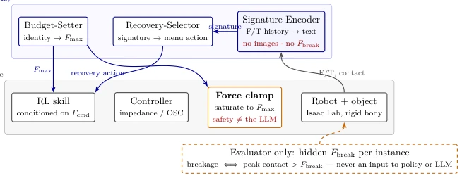
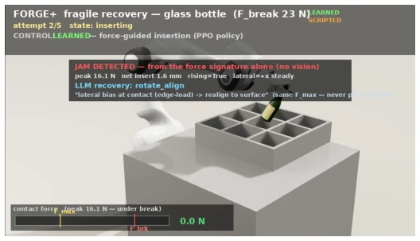
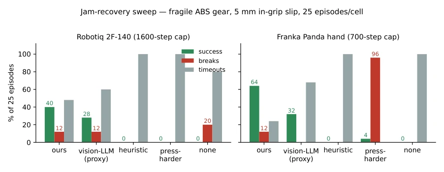

This paper strips bare the pain points of "force-controlled assembly". The most audacious move of FORGE-plus is freezing the LLM into a "read-only text" budget setter, completely eliminating the possibility of it blindly commanding force levels. The authors even interred the intuitive recovery strategy of "press harder", proving that before fragile components, the LLM's "common sense" falls short of the physics engine's hard clamp. However, do not rush to declare revolutionary success, after all it is all simulation, even fracture is merely calculated as a scalar threshold, real-world deployment? The authors honestly stated "not touching". The most amusing part is that they treated the process of PPO failing as a core finding, admitting that reinforcement learning in a 0.4mm gap is simply suicidal, which is much more honest than those papers forcing leaderboard rankings. This attitude of "negative results are discoveries" is simply a refreshing stream in the Embodied AI circle; although it does not solve the ultimate sim-to-real problem, at least it does not pretend to sleep on force control safety. Through a "weight soup" unified strategy, they proved that a single checkpoint can handle both fragile and rigid components simultaneously, which is much more elegant than models trained separately.
Existing force-controlled assembly skills (such as FORGE [4]), although able to respect force upper limits, leave two fatal blind spots: First, who sets the force budget? Automatic tuning works for steel parts, but is a disaster for nylon parts; Second, what to do after failure? Existing visual LLM reasoners (such as REFLECT [5], AHA [7]) rely on pixels, but contact faults such as wedging, stripping are only obvious on force traces, but visually they are the same. More dangerously, the "press harder" recovery strategy proposed by Tactile-VLA [8] directly leads to a 96% fracture rate on fragile parts. This paper aims to solve the problems of "who sets the budget" and "how to recover safely", by freezing the LLM to only make text decisions, returning force control authority to the underlying controller, ensuring fragile components are not damaged in mixed-material assembly. This is not only an architectural innovation, but also a return to the essence of "force control safety", namely force budget must be based on object properties rather than task success rates.
The system adopts a dual architecture: slow layer is frozen LLM, fast layer is force control RL skill. LLM only sets Fmax based on object identity text at the beginning of episode, when failed reads force/contact signature (no image) selects recovery action from fixed menu (strictly forbidden to increase budget). Fast layer executes RL skill, through impedance controller and hard clamp forcibly limits force not exceeding Fmax, ensuring LLM cannot exceed authority. Core design guarantees non-cyclic evaluation: hidden fracture force Fbreak only visible to evaluator, Fmax recovery period unchangeable, force control authority at bottom layer. Regarding skill learning, PPO failed due to exploration noise causing fracture under 0.4mm gap, authors turned to use expert demonstration + DAgger + Behavior Cloning mixed strategy, and through "weight soup" unified fragile and rigid component strategy. Release decision adopts input-skip head (input-skip head), avoiding backbone network discarding key state signals. Additionally, Signature Encoder converts force/torque history into text tokens, enabling LLM to understand physical state rather than images.

Figure 1: The two-layer architecture. The LLM only emits a number (Fmax) and a menu choice; the guarantee that commanded force never exceeds Fmax is produced by the clamp in the fast loop, backed by a fixed 120 N global hard cap and JSON range validation. The hidden Fbreak feeds only the evaluator’s breakage check.

Figure 2: The rendered fragile recovery episode (Franka, glass-class bottle, Fbreak ≈23 N). The JAM card shows the actual signature the LLM saw — peak 16.1 N, net insert 1.6 mm, rising, lateral bias +x steady — its rotate_align decision, and the standing constraints: from the force signature alone (no vision); same Fmax — never press harder.
Tested bottle rack placement and gear insertion tasks in Isaac Lab simulation, involving Robotiq 2F-140 and Franka two types of grippers. Evaluation metrics include closed-loop success rate, fracture rate, and recovery efficacy. Unified strategy passed 256/256 clean threshold on both fragile and rigid components with zero fracture. Under 5mm grasp slip interference, force signature recovery chain recovered 64% jamming on Franka, while "press harder" baseline led to 96% fracture. Ablation experiments revealed PPO must fracture under 0.4mm gap due to exploration noise, and naturally designed release heads all failed, only input-skip head effective. Authors publicly disclosed negative results such as PPO failure as core findings, proving deep understanding of exploration-damage tradeoff. Specifically, in bottle rack task 16.1N jamming force is far below 23N fracture threshold, proving effectiveness of force signature detection.
其他图片Other Figures

Figure 4: The recovery sweep of Table 3 as grouped bars. Note press-harder’s two faces: futile on the 2F-140 (100% timeouts, zero breaks — the escalated ceiling never engages because the tilted bore never takes load; there, doing nothing is the destructive cell, 20% breaks), destructive on the Franka (96% breaks).